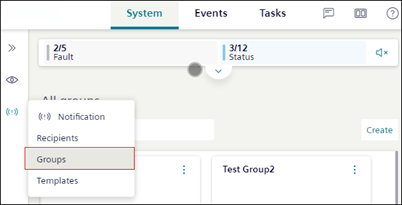

Creating and Managing Groups in Mobile Flex
This section provides step-by-step instructions on how to create, update, and remove group from the mobile Flex web app.
- Tap and select System.
- Rotate your mobile screen to view the left side bar.
- In the left side bar, tap and navigate to Notification > Groups.

- Tap Create and enter Name and Description of the group.
- To add recipients to the group, tap and select Add recipient from the menu options.
- The Add recipient dialog box displays with the list of recipients.
- Select the checkbox corresponding to the recipient you want to add to the group and tap Create.
- The selected recipients are added to the group.
- (Optional) To remove a recipient or sub-group from the selected group, select the specific recipient or group and tap Remove.
- (Optional) To edit the group, tap next to the group tile and select Edit from the menu options.
- (Optional) To delete the group, tap next to the group tile and select Delete from the menu options.